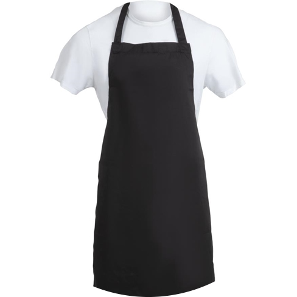
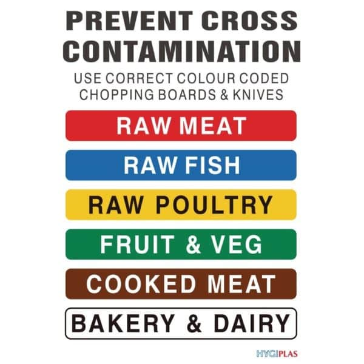
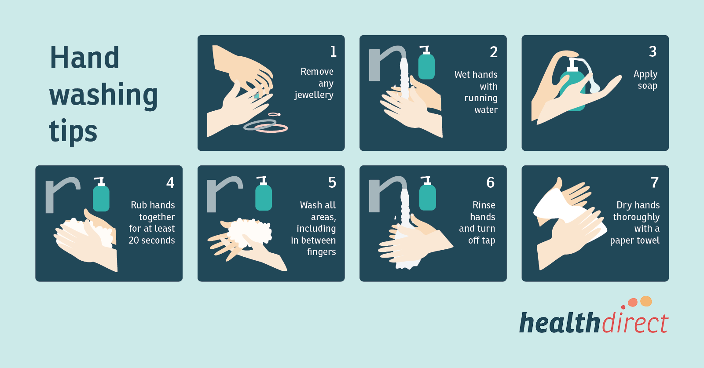
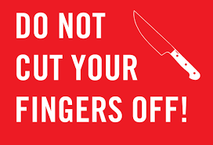

Whilst in the kitchen, there are a few rules that you muct always follow in order to maximise safety , and reduce injuries.Here are 5 of the kitcen saftey rules.

Apron
: an apron is a protective garment worn over the front of one 's clothes and tied at the back. An apron also ensures that loose or floppy clothes don't get in the way because loose clothing is a hazard while cooking (it can catch
fire ) as well as prevents clothes getting stained or dirty.
Leather shoes:
are shoes that are made with hard leather that protects the feet from sharp or heavy equipment in the kitchen such as knives, chopping boards, hot liquids.
Chopping Boards
The correct color chopping board has to be used when cutting anything. This is important so that cross-contamination does not take place. Cross-contamination is bacteria transferring from uncooked food or a surface onto
ready to eat food.This is how infections are spread to people. For example: Keeping raw meats separated from vegetables and fruits by using different coloured chopping boards.

- red :raw meats
- yellow :raw poultry
- brown :cooked meats
- white :dairy products
- blue :fish and seafood
- green :vegetables and fruits
Knives :
When handling knives, there are several rules that you should follow. When cutting, you should use the
correct chopping method and ensure the knife is
adequately sharpened.When walking with the
knife, it
should be next to you faced down. After you are finished working with it,
never put it straight into soapy water because whoever puts their hand in can get cut.
Never
carry a chopping board with the knife on it . All of these rules should be followed at all times to ensure safety of all those in the kitchen.
Befre you start cooking, it is important that you wash your hands to prevent germs from spreading around in the kitchen, which can make wjoever eats the food sick. It is also likely that you could have touched something tht is
bad to digest. For example, you could have glue on your hand and you could accidently digest it when you cook and eat wih it.

